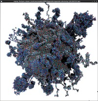
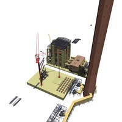
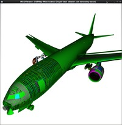
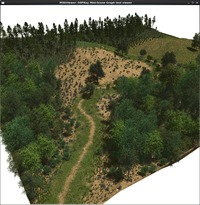
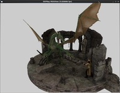
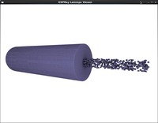

OSPRay Gallery
This page contains a few sample screenshots of different renderings done with OSPRay. If you have created any interesting images through OSPRay and would like to share them on this page, please send us an email.
Screenshots and Video of the 10TB Walls Dataset
{kind=link}
{kind=link}
{kind=link}
{kind=link}
{kind=link}
Some of the fourty timesteps of the walls dataset, which is a simulation of the formation of domain walls in the early universe by the Centre for Theoretical Cosmology (CTC) in cooperation with SGI. Each volume has a resolution of 40963, thus the total dataset is 10TB large. With OSPRay running on a SGI UV300 system you can interactively explore the data – watch the movie. For more background read the related blog post by SGI.
More Screenshots of OSPRay’s Path Tracer
{kind=link}
{kind=link}
{kind=link}
{kind=link}
{kind=link}
The first five example scenes were modeled with EasternGraphics’ room planning and interior design software pcon.Planner, exported to obj and rendered using OSPRay. The scenes contain between one million and ten millon triangles.
{kind=link}
This car model consists of 5.7 million triangles and features some of the more advanced materials of OSPRay’s path tracer.
OSPRay Parallel Rendering on TACC’s “Stallion” Display Wall

This shows a photo of OSPRay parallel rendering on TACC’s 320 MPixel “Stallion” Display wall.
VMD/Tachyon Screenshots
This section shows some screenshots from the Tachyon module applied to models exported from the widely used “Visual Molecular Dynamics” (VMD) tool. In that workflow, a VMD user uses the VMD command export Tachyon mymodel.tachy to export the VMD model in tachyon format, then uses the ospTachyon mymodel.tachy viewer on those models.
{kind=link}
VMD “GLPF” model; original model courtesy John Stone, UIUC.

{kind=link}
VMD “Organelle”, using vdW-representation via ospray spheres. Model courtesy Carsten Kutzner, MPI BPC, Goettingen.
{kind=link}
VMD “ribosome”, with balls, sticks, ribbons, and quicksurfs. Model courtesy Carsten Kutzner, MPI BPC, Goettingen.
ospModelViewer Samples
Sample screen-shots from the ospModelViewer, typically imported via the OBJ model file format.
{kind=link}
The “Utah Fairy” (174k triangles), rendered with textures, transparency, and shadows (using the OBJ renderer. Model originally modelled using DAZ3D’s DAZ Studio.

{kind=link}
The “UNC PowerPlant” model (12.5 million triangles).

{kind=link}
The “Boeing 777” model (342 million triangles), rendered using Ambient Occlusion. Model obtained from and used with permission of the Boeing Company (special thanks to Dave Kasik).

{kind=link}
The “xfrog” model of 1.7 billion (instanced) triangles and transparency textures. Model originally created using XFrog, model courtesy Oliver Deussen, University of Konstanz.

{kind=link}
The 1 million triangle “DAZ Dragon” model, with textures, transparency textures, and rendered with OSPRay’s experimental path tracer. Model originally created using DAZ3D’s DAZ Studio.
Particle Viewer Examples
Sample screen-shots from the ospParticleViewer.

The 740k-particle “nanospheres” model. Model courtesy KC Lau and Larry Curtiss, Argonne National Labs, and Aaron Knoll, University of Utah.

{kind=link}
A 80 million particle model from the University of Utah’s “UIntah” simulation package. Data courtesy James Guilkey, Aaron Knoll, and Dave de St.Germain, University of Utah.